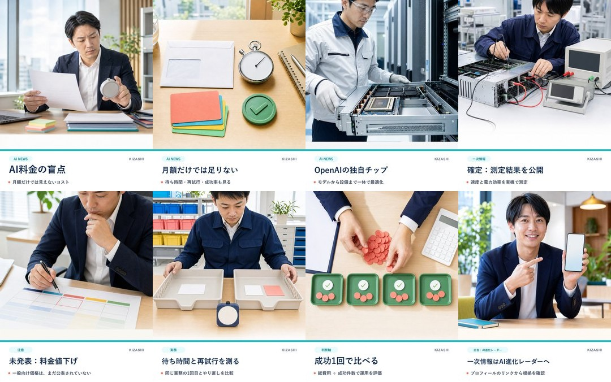

AI料金の盲点

captionと一次情報を確認
AI料金を、月額だけで比べていませんか？ OpenAIは、同社初の独自推論チップJalapeñoと、その測定結果を公開しました。ただし、一般利用者向け料金の値下げや日本での提供条件は発表されていません。 実務では、待ち時間・再試行・成功件数・総費用÷成功件数を測ります。一次情報と、ほかの検証済みAIニュースはプロフィールの「AI進化レーダー」から確認できます。 #AIニュース #生成AI #AI導入
一次情報：OpenAI